Natural Language Processing & Interpretation
TIN173/DIT410 Artificial Intelligence
John J. Camilleri
2016-04-26
Student participation link
https://b.socrative.com/student/
or go to socrative.com and click Student login
Room number: OHAI
Source: http://www.denizyuret.com/2010/12/research-focus.html
What is natural language?
Natural language
- Any language that develops naturally in humans through use and repetition
- e.g.: English, Swedish
- Imprecisely defined: is
"I totally lol'ed"correct? - Interpretation can be ambiguous
Formal language
- Specifically constructed for some purpose
- e.g.: JavaScript, propositional logic
- Precisely defined
-
print(1 + 2)ok
-
print(+ 1 2.bad
-
- Unambiguous, precise semantics
NLP
- Computational methods to natural language
- Text / speech
Classification
e.g. sentiment analysis
https://www.csc.ncsu.edu/faculty/healey/tweet_viz/

Information extraction
e.g. Named entity recognition
http://www.europeana-newspapers.eu/named-entity-recognition-for-digitised-newspapers/

Information retrieval (search)
- corpus of documents
- query (in given language)
- result set
Machine translation
e.g. Google Translate
Min mamma är svensk.
Min mamma är inte svensk.
https://translate.google.se/?hl=en#sv/en/Min%20mamma%20%C3%A4r%20svensk
Rules vs Statistics
- These days many NLP tasks are powered by machine learning
- We have lots of data (corpora), fast processors, cheap storage
- Up to the 1980s, most NLP systems were based on complex sets of hand-written rules
- Linguistics itself is quite a formal discipline
Phrase-Structure Grammars
- Words have different lexical categories: noun, verb, adjective...
- Combine into phrasal categories:
the(determiner) +house(noun) =the house(noun phrase) - Grammar is a set of rules describes which combinations are possible
- Goal: describe the set of sentences which are correct in a language
and reject those which are invalid-
the man saw a mountainok
-
the man saw abad
-
- Assign parse trees to valid sentences
Context-free grammars
A context-free grammar is a 4-tuple G = (V, Σ, R, S) where:
- V is a finite set of non-terminals (called "syntactic categories")
- Σ is a finite set of terminals (disjoint from V)
- R is the set of production rules, a finite relation from V to (V ⊔ Σ)* , e.g.:
X → YX → aX → b Z
- S is the start symbol ∈ V
The language L of a grammar G is the set of strings which have a valid derivation from S:
L(G) = { w ∈ Σ* : S ⇒* w}
Example grammar
S = sentence, NP = noun phrase, VP = verb phrase, Det = determiner, N = noun, V = verb
Rules
S → NP VP
NP → Det N
VP → V NP
Lexicon
N → man | mountain
V → saw
Det → a | the
"the man saw a mountain"
"the man saw a"
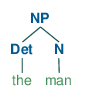
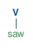

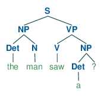
No complete tree starting wih S!
Bigger example
We add prepositions Prep and prepositional phrases PP.
Rules
S → NP VP
NP → Det N
NP → NP PP
VP → V NP
VP → VP PP
PP → Prep NP
Lexicon
NP → Mary
N → man | mountain | telescope
V → saw
Det → a | the
Prep → with | on
"Mary saw the man on the mountain with a telescope"
- The meaning of this sentence is ambiguous!
- The problem is PP-attachment
- The prepositional phrase can be attached to both NPs and VPs
- The parse trees show us how the interpretations differ
- All are equally valid syntactically
"saw ... with a telescope"
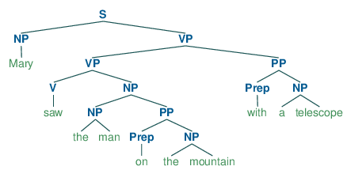
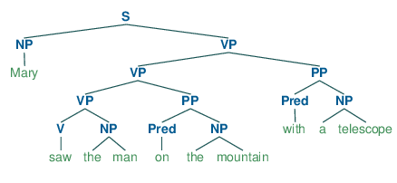
"... on the mountain with a telescope"
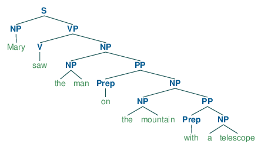
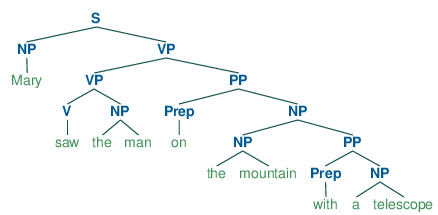
"the man ... with a telescope"
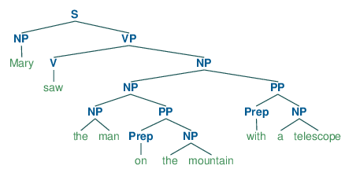
Syntactic analysis (parsing)
- Given a grammar, find a derivation from
Sfor an input string - Function from string to a list of parse trees
parse(g : Grammar, s : String) : ParseTree[]- 0 trees: input is invalid
- 1 tree: input is valid and unambiguous
- 2+ trees: input is valid and ambiguous
Algorithms
- Parsing is a search problem
- Top-down
- Start from
Sand apply rules until you match input - Wastes time building subtrees that will never match input
- Start from
- Bottom-up
- Apply rules backwards based on input
- Wastes time building subtrees which will never join at
S
- Chart parsing
- Use dynamic programming to store derivations for sub-strings
- Improve efficiency of algorithm by avoiding backtracking
CYK algorithm
- Bottom-up chart parser
- Example of a parsing "chart":
| Lydia | walks | in | a | garden | with | a | tree |
|---|---|---|---|---|---|---|---|
[0,1] NP
|
[0,2] | [0,3] | [0,4] | [0,5] S
|
[0,6] | [0,7] | [0,8] S,S
|
[1,2] V
|
[1,3] | [1,4] | [1,5] VP
|
[1,6] | [1,7] | [1,8] VP,VP
|
|
[2,3] P
|
[2,4] | [2,5] PP
|
[2,6] | [2,7] | [2,8] PP
|
||
[3,4] Det
|
[3,5] NP
|
[3,6] | [3,7] | [3,8] NP
|
|||
[4,5] N
|
[4,6] | [4,7] | [4,8] | ||||
[5,6] P
|
[5,7] | [5,8] PP
|
|||||
[6,7] Det
|
[6,8] NP
|
||||||
[7,8] N
|
- Space: O(n²m), Time: O(n³m)
n = number of input symbols
m = number non-terminals in grammar (constant for grammar) - Number of parse trees is actually exponential! O(2ⁿ)
- Another well-known parsing algorithm: Earley parser
Probabilitistic parsing
- How to choose amongst multiple ambiguous parses?
- Assign probability values to rules and rank parses by combined probability
- Probabilites can be learned from an annotated corpus (treebank)
PCFG example
Rules
S → NP VP [1.0]
NP → Det N [0.5]
NP → NP PP [0.4]
VP → V NP [0.8]
VP → VP PP [0.2]
PP → Prep NP [1.0]
Lexicon
NP → Mary [0.1]
N → man [0.6] | mountain [0.2] | telescope [0.2]
V → saw [1.0]
Det → a [0.4] | the [0.6]
Prep → with [0.5] | on [0.5]
Parse tree probability
1.0 × 0.1 × 0.2 × 0.8 × 1.0 × 0.4 × 0.5 × 0.6 × 0.6 × 1.0 × 0.5 × 0.5 × 0.6 × 0.2 × 1.0 × 0.5 × 0.5 × 0.4 × 0.2 = 0.0000006912 = 6.912 e-7
1.0 × 0.1 × 0.8 × 1.0 × 0.4 × 0.5 × 0.6 × 0.6 × 1.0 × 0.5 × 0.4 × 0.5 × 0.6 × 0.2 × 1.0 × 0.5 × 0.5 × 0.4 × 0.2 = 0.0000013824 = 1.3824 e-6
- Thus the second tree is more likely and should be ranked first.
- These values must be smoothed so that an out-of-corpus phrase does not have 0 probability.
Overgeneration
"All grammars leak"
Edward Sapir, Language: An Introduction to the Study of Speech (1921)
http://www.bartleby.com/186/2.html
Lexicon
Let's add the pronoun I and present tense verb see:
NP → Mary | I
V → saw | see
I see Mary

Mary saw I
- Pronoun case agreement
-
Iin the subject position (nominative) butmein the object position (accusative)
Mary see a telescope

- Subject-verb agreement
-
I see(first person) butMary sees(third person) - These problems are much worse in other languages!
English grammar is relatively simple.
Solution 1: adding more rules
1.1: Handling pronoun case
Separate rules for noun-phrases in subject position (NP_S)
and noun phrases in object position (NP_O).
Rules
S → NP_S VP
NP_S → Det N
NP_S → NP_S PP
NP_O → Det N
NP_O → NP_O PP
VP → V NP_O
VP → VP PP
PP → Prep NP_S
PP → Prep NP_O
Lexicon
NP_S → Mary | I
NP_O → Mary | me
N → man | mountain | telescope
V → saw | see
Det → a | the
Prep → with | on
1.2: Handling verb-subject agreement
Separate rules for noun-phrases in the first-person (NP_?_P1)
and noun phrases the third-person (NP_?_P3).
Rules
S → NP_S_P1 VP_P1
S → NP_S_P3 VP_P3
NP_S_P1 → Det N
NP_S_P1 → NP_S_P1 PP
NP_O_P1 → Det N
NP_O_P1 → NP_O_P1 PP
NP_S_P3 → Det N
NP_S_P3 → NP_S_P3 PP
NP_O_P3 → Det N
NP_O_P3 → NP_O_P3 PP
VP_P1 → V_P1 NP_O_P1
VP_P1 → V_P1 NP_O_P3
VP_P1 → VP_P1 PP
VP_P3 → V_P3 NP_O_P1
VP_P3 → V_P3 NP_O_P3
VP_P3 → VP_P3 PP
PP → Prep NP_S_P1
PP → Prep NP_O_P1
PP → Prep NP_S_P3
PP → Prep NP_O_P3
Lexicon
NP_S_P1 → I
NP_O_P1 → me
NP_S_P3 → Mary
NP_O_P3 → Mary
N → man | mountain | telescope
V_P1 → saw | see
V_P3 → saw | sees
Det → a | the
Prep → with | on
- This becomes messy!
- A program can generate these rules for us.
- But remember the parsing complexity depends on the size of the grammar! O(n³m)
- Explosion of number of rules is still bad, even if complexity is polynomial.
Solution 2: augmenting the grammar
- Definite clause grammar (DCG)
- Add parameters to the rules
- Use constraints to limit the over-generation
- Takes us beyond the expressove power of CFG
Rules
S → NP(n,c) VP(n) {c = Sbj}
NP(P3,_) → Det N
NP(n,c) → NP(n,c) PP
VP(n) → V(n) NP(_,c) {c = Obj}
VP(n) → VP(n) PP
PP → Prep NP(_,_)
Lexicon
NP(P3,_) → Mary
NP(P1,Sbj) → I
NP(P1,Obj) → me
N → man | mountain | telescope
V(P1) → saw | see
V(P3) → saw | sees
Det → a | the
Prep → with | on
Generative capacity (Chomsky hierarchy)
- Context-free grammars are popular because parsing them is quite efficient
- All programming languages' syntax are basically CF
- But CFGs have been proven not to be sufficient for describing all of natural language.
| Grammar | Languages | Automaton | Production rules (constraints) |
|---|---|---|---|
| Type-0 | Recursively enumerable | Turing machine | α → β (no restrictions) |
| Type-1 | Context-sensitive | Linear-bounded non-deterministic Turing machine | α A β → α γ β |
| Type-2 | Context-free | Non-deterministic pushdown automaton | A → γ |
| Type-3 | Regular | Finite state automaton | A → a and A → aB |
where
- A, B are non-terminals
- α, β, γ are strings of terminals/non-terminals
Dependency parsing
- Not about phrase structure (constituency)
- About the relations between tokens in a sentence - dependencies
http://nlp.stanford.edu:8080/corenlp/process
where
- nsubj: nominal subject
- dobj: direct object
- det: determiner
- nmod: nominal modifier
- case: case marking
Syntax and semantics
Socrative poll:
https://b.socrative.com/student/
or go to socrative.com and click Student login
Room number: OHAI

http://wmjasco.blogspot.se/2008/11/colorless-green-ideas-do-not-sleep.html
Different levels of representation
Colourless green ideas sleep furiously
- Made famous by Noam Chomsky in Syntactic Structures (1957).
- This sentence is syntactically correct.
- It would be parseable using a PSG as seen previously.
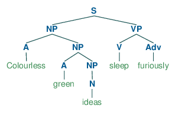 - It is unclear if it means aynthing - semantically invalid
- colourless and green are contradictory
- ideas don't sleep
- how can one sleep furiously?
Semantic interpretation
- We are interested in the meaning of a phrase, more than it's structure.
- Semantic representation is more abstract
- You understand "move the ball to the left" without needing to understand linguistics
Goal: Syntactic representation (parse tree) → Semantic representation (predicate)
Math example
Simple grammar
Consider a grammar for mathematical expressions
Exp → Exp Oper Exp
Exp → '(' Exp ')'
Exp → Number
Number → Digit
Number → Number | Digit
Digit → '0' | '1' | ... | '9'
Oper → '+' | '−' | '×' | '÷'
And a parse tree in that grammar for the expression 3 + (4 ÷ 2):
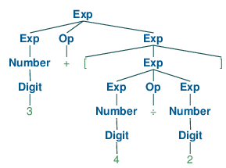
- The structure is nice, but we really want the meaning of the expression
- We want to evaluate the expression
- Include semantic info in grammar and tree
Augmented grammar
Note the addition of the predicate Apply, which is defined outside of the grammar.
Exp(x) → Exp(x₁) Oper(op) Exp(x₂) { x = Apply(op, x₁, x₂)}
Exp(x) → '(' Exp(x) ')'
Exp(x) → Number(x)
Number(x) → Digit(x)
Number(x) → Number(x₁) | Digit(x₂) { x = (10 × x₁) + x₂}
Digit(x) → x { 0 ≤ x ≤ 9 }
Oper(x) → x {x ∈ {+, −, ×, ÷}}
Augmented parse tree in that grammar:
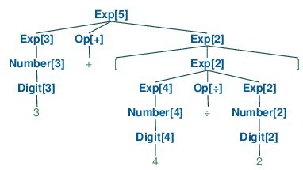
So a semantic parse would give us: 5
Natural language example
Mary saw the man
- Syntactic representation:
(S (NP Mary) (VP (V saw) (NP (Det the) (N man))))

- Semantic representation:
Saw(Mary, Man)
Saw,MaryandManare not tokens but logical terms.
Compositional semantics
- We want semantics to be compositional: the meaning of a phrase is derived from the meaning of its sub-parts.
- Semantic interpretations:
-
Mary =
Mary -
the man =
Man
-
Mary =
- What about saw the man?
- It's a predicate which takes an argument.
- Think of it as a lambda abstraction:
λx · Saw(x, Man)
Grammar
S(pred(obj)) → NP(obj) VP(pred)
VP(pred(obj)) → V(pred) NP(obj)
NP(obj) → Name(obj)
NP(obj) → Det(The) N(obj)
Name(Mary) → Mary
N(Man) → man
Det(The) → the
V(λy λx · Saw(x, y)) → saw
Mary saw the man
So a semantic parse would give us: Saw(Mary, Man)
Quantifiers
Actually I cheated! "Mary sees the man" really means something like "There is a man and Mary sees him".
We have quantification
- So "the man" is really something like
∃x · Man(x)or∃x ∈ Men - then "Mary sees the man" is maybe
∃x · Man(x) ∧ Saw(Mary, x)
Of course modelling "real" English will require many more modifications.
- Time and tense: Mary saw the man vs. Mary sees the man
- Long-distance dependencies: Mary saw the man she had a relationship with
- Ambiguity: Police help dog bite victim
More on ambiguity
Socrative poll:
https://b.socrative.com/student/
or go to socrative.com and click Student login
Room number: OHAI

More on ambiguity
Most of the sentences we hear seem unambiguous.
But almost every utterance contains some kinds of ambiguity.
We are just very good at disambiguating!
Levels of ambiguity
- Lexical
- A word can belong to multiple categories
- Buffalo buffalo buffalo buffalo
- noun (animal, American bison)
- verb (to confuse)
- adjective (coming from Buffalo, NY)
- "Bison [from] Buffalo [often] confuse [other] bison"
- Syntactic
- Phrases can attach at different points in the tree
- I ordered a pizza with rucola
- I ordered a pizza with my phone
- Semantic
- Multiple interprations
- Common result of syntactic ambiguity
-
Everybody loves somebody
∀x ∃y · Loves(x,y)or∃y ∀x · Loves(x,y)?
Disambiguation
Probabilites as in PCFG only help us choose most likely phrase (most common in a corpus). But that is not taking context into account!
We need models to disambiguate.
World model
- The likelihood that a proposition holds in the world
- Contains knowledge about the world:
- rucola is a pizza topping
- a phone can be used to order something
Mental model
- What the speaker believes
- What the speaker believes the hearer believes, etc.
Politician saying: I am not a crook
- crook as in a liar
- crook as in a hooked staff of a shepherd
Language model
- The likelihood that a certain string of words appear together
- pizza with rucola (quite likely)
- pizza with friends (somewhat likely)
- pizza with monkeys (quite unlikely)
Acoustic model
- When dealing with speech.
- The likelihood that a particular sequence of sounds occurs, given a string of words.
NLP in Shrdlite
Grammar
Deeper description of how the Shrdlite grammar works: http://chalmersgu-ai-course.github.io/shrdlite-grammar.html
- Grammar file:
grammar.ne - Compiled with the
nearley.jslibrary to grammar.js - You can modify and rebuild with:
npm install nearley --globalmake grammar.js
Parsing
module Parser {
function parse(input: string): ParseResult[];
interface ParseResult {
input : string; // The input string given by the user
parse : Command; // The `Command` structure that the parser built from `input`
}
}Don't need to change (except for modifications)
Interpretation
module Interpreter {
function interpretCommand(cmd: Command, state: WorldState): DNFFormula;
type DNFFormula = Conjunction[];
type Conjunction = Literal[];
interface Literal {
polarity : boolean;
relation : string;
args : string[];
}
}Examples
| Literal | JS object |
|---|---|
| ontop(a,b) | {polarity:true, relation:"ontop", args:["a","b"]} |
| holding(q) | {polarity:true, relation:"holding", args:["q"]} |
| ¬leftof(c,d) | {polarity:false, relation:"leftof", args:["c","d"]} |
| p | {polarity:true, relation:"p", args:[]} |
How do you do this?
- This is for you to solve
- It will involving the traversing the parse tree building a semantic interpretation
- Take state of world into account
Final question!
Socrative poll:
https://b.socrative.com/student/
or go to socrative.com and click Student login
Room number: OHAI
Thanks!